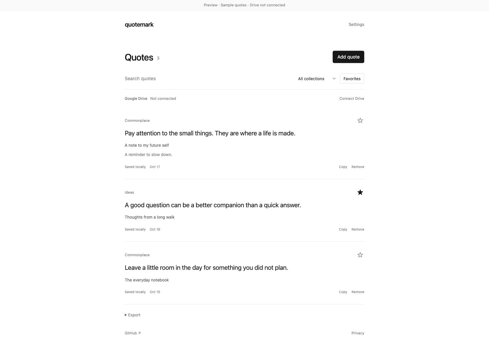

Your personal commonplace
Keep the words
that stay with you.
Highlight a sentence. Save the thought. Build a home for the things you underline, with optional archiving to your own Google Docs.
Download the local preview ↓Installation guide ↗Preview status: Local quote saving is available. Google sign-in is being validated, and this extension is not yet published in the Chrome Web Store.

A sentence is all it takes.
Highlight text on a normal web page, right-click, and choose Save quote to Quotemark. Your selection stays saved on your device, along with the source link and date. Collections, favorites, search, and exports help you find it again.
Your words. Your Drive.
When configured and connected, Quotemark archives quotes directly into formatted monthly Google Docs in a Quotemark folder. Each entry includes its source, capture date, and optional note. Pending uploads stay on the device until they can be synced.
Small by design.
No ads, analytics, subscription, or developer backend. No continuous page monitoring. Google access uses only the per-file drive.file permission. Read the privacy policy or inspect the complete source code.
Support
Report issues on GitHub or contact abdullahdotpy@gmail.com. Please keep private quotes and account credentials out of public reports.